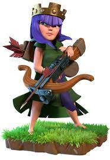
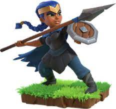

Barbarian King

"This colossal menace soaks up huge amounts of damage and bashes anything in his path. He guards his territory fiercely when defending, and can launch into a devastating rage when attacking once his Iron Fist ability is unlocked!"
Archer Queen

"This graceful huntress is a master of destructive force, though modest in health. She snipes targets in her territory when defending, and can summon stealth and terrifying damage when attacking once her Royal Cloak ability is unlocked!"
Grand Warden
"This veteran battle-scholar seeks out groups of friendly troops to fight behind and boost with his Life Aura, and assumes the form of a tower on defense. Attacking, he can walk over Walls or fly high, and can make nearby troops immune to damage once his Eternal Tome ability is unlocked!"
Royale Champion

"Over the Wall and at them! The Royal Champion is only afraid of four things, and the enemy isn't one of them. She attacks with her spear at short range and throws her shield to take down defenses once her Seeking Shield ability is unlocked!"